가스기사 (2010-07-25 기출문제)
1과목: 가스유체역학
1. 정적비열 Cv는 0.21Kcal/㎏·K, 비열비 k는 1.3인 어떤 기체의 정압비열 Cp는 몇 kcal/㎏·K인가?
- 0.161
- 1.61
- 0.273
- 2.73
(정답률: 68%)

2. 그림과 같이 윗변과 아랫변이 각각 a, b이고 높이가 H인 사다리꼴형 평면 수문이 수로에 수직으로 설치되어 있다. 비중량 γ인 물의 압력에 의해 수문이 받는 전체 힘은?
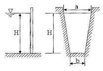
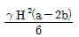
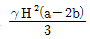
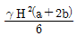
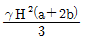
(정답률: 53%)
3. 다음과 같은 베르누이 방정식을 만족하기 위한 가정이 아닌 것은?
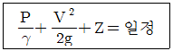
- 정상류이다.
- 유선을 따라 적용된다.
- 마찰이 있다.
- 비압축성 유체이다.
(정답률: 83%)
4. 내경이 10㎝인 원관이 내경 20㎝로 갑자기 확대되는 경우 0.5m3/s의 유량으로 물이 흐를 때 손실수두는 약 몇 m인가?
- 2.4
- 7.3
- 52.7
- 116.3
(정답률: 35%)
5. 벤튜리관에 대한 설명으로 옳지 않은 것은?
- 단면적이 감소하는 부분에서는 유체의 속도가 증가한다.
- 실제유체에서는 점성 등에 의한 손실이 발생하므로 유량계수를 사용하여 보정해 준다.
- 유량계수는 벤튜리관의 치수, 형태 및 관내벽의 표면상태에 따라 달라진다.
- 확대부의 각도를 20~30°, 수축부의 각도를 6~13°로 하여야 압력손실이 적다.
(정답률: 61%)
6. 비열비 k인 이상기체의 등엔트로피 유동에서 정체온도 T0와 임계온도 T*의 관계식을 옳게 나타낸 것은?
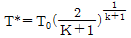
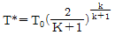
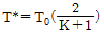
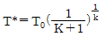
(정답률: 57%)
7. 이상기체에서 음속은 온도와 어떠한 관계가 있는가?
- 온도의 제곱근에 반비례한다.
- 온도의 제곱근에 비례한다.
- 온도의 제곱에 비례한다.
- 온도의 제곱에 반비례한다.
(정답률: 77%)
8. 유동장 내의 속도(u)와 압력(p)의 시간 변화율을 각각 ∂U/∂t=A, ∂p/∂t=B라고 할 때 다음 중 옳은 것을 모두 고르면?
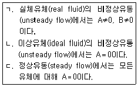
- ㄱ, ㄴ
- ㄱ, ㄷ
- ㄴ, ㄷ
- ㄱ, ㄴ, ㄷ
(정답률: 65%)
9. 공기의 기체상수 R 값은 287m2/s2K이다. 온도 40℃, 압력 5㎏f/cm2·abs 에서의 밀도는 몇 ㎏/m3인가?
- 0.557
- 2.135
- 5.455
- 8.572
(정답률: 48%)
10. 내경이 300㎜, 길이가 300m인 관을 통하여 평균유속 3m/s로 흐를 때 압력손실수두는 몇 m인가? (단, Darcy-Weisbach 식에서의 관마찰계수는 0.03이다.)(오류 신고가 접수된 문제입니다. 반드시 정답과 해설을 확인하시기 바랍니다.)
- 12.6
- 13.8
- 14.9
- 15.6
(정답률: 66%)
11. 펌프작용이 단속적이므로 맥동이 일어나가 쉬워서 이를 완화하기 위하여 공기실을 필요로 하는 펌프는?
- 원심펌프
- 기어펌프
- 수격펌프
- 왕복펌프
(정답률: 74%)
12. 덕트 내 압축성 유동에 대한 에너지 방정식과 직접적으로 관련되지 않는 변수는?
- 위치에너지
- 운동에너지
- 엔트로피
- 엔탈피
(정답률: 70%)
13. 절대압력이 4.4㎏f/cm2 이고, 밀도가 3㎏/m3인 공기의 온도는 몇 ℃인가? (단, 공기의 기체상수는 29.4 ㎏f·m/㎏·K이다.)
- 5
- 23.2
- 227
- 500
(정답률: 53%)
14. 도플러효과(doppler effect)를 이용한 유량계는?
- 에뉴바 유량계
- 초음파 유량계
- 오벌 유량계
- 열선 유량계
(정답률: 75%)
15. 그림에서 피스톤 A1의 반지름이 A2의 반지름의 4배가 될 때, 힘 F1과 F2의 관계를 옳게 나타낸 것은?
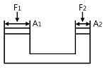
- F1=4F2
- F1=(1/4)F2
- F1=16F2
- F1=(1/16)F2
(정답률: 60%)
16. 반지름이 R이고 안과 밖의 압력차가 △p인 비눗방울의 표면 장력을 옳게 나타낸 것은?(오류 신고가 접수된 문제입니다. 반드시 정답과 해설을 확인하시기 바랍니다.)
- △pR / 4
- △p / πR
- πR / 4△p
- △pR / 2
(정답률: 40%)
17. 다음 중 대기압을 측정하는 계기는 무엇인가?
- 수은기압계
- 오리피스미터
- 로타미터
- 둑(weir)
(정답률: 82%)
18. 파이프 내 점성흐름에서 길이방향으로 속도분포가 변하지 않는 흐름을 가리키는 것은?
- 플러그흐름(plug flow)
- 완전발달된 흐름(fully developed flow)
- 층류(laminar flow)
- 난류(turbulent flow)
(정답률: 84%)
19. 왕복펌프의 밸브 설계 시 유의할 점으로 볼 수 없는 것은 무엇인가?
- 밸브의 개폐가 정확해야 할 것
- 물의 밸브를 지날 때의 저항을 최대한으로 할 것
- 누설을 방지할 것
- 내구성이 있을 것
(정답률: 92%)
20. 비점성 유체의 정의로 적합한 것은?
- 유체 유동 시 마찰저항이 존재하지 않는 유체를 말한다.
- 유체 유동 시 마찰저항이 존재하는 유체를 말한다.
- 실체 유체를 말한다.
- 전단응력이 존재하는 유체 흐름을 말한다.
(정답률: 81%)
2과목: 연소공학
21. 다음 중 연소 부하율에 대하여 옳게 설명한 것은?
- 연소실의 염공면적당 입열량이다.
- 연소실의 단위체적당 열발생률이다.
- 연소실의 염공면적과 입열량의 비율이다.
- 연소 혼합기의 분출속도와 연소속도와의 비율이다.
(정답률: 61%)
22. 반응기 속에 1㎏의 기체가 있고 기체를 반응기 속에 압축시키는데 1500㎏f·m의 일을 하였다. 이때 5kcal의 열량이 용기 밖으로 방출했다면 기체 1㎏당 내부에너지 변화량은 약 몇 Kcal인가?
- 1.44
- 1.49
- 1.69
- 2.10
(정답률: 62%)
23. 옥탄(C8H18)이 공기 중에서 연소할 때 공기 과잉율이 높아지면 어떻게 되는가?
- 옥탄 반응열이 커진다.
- 최고 단열 연소온도가 낮아진다.
- 최고 단열 연소온도가 높아진다.
- 연소온도와 반응열에 무관하다.
(정답률: 42%)
24. 가연성기체를 공기와 같은 조연성기체 중에 분출시켜 연소시키므로 불완전연소에 의한 그을음을 형성하기 쉬운 기체의 연소 형태는?
- 혼합연소(混合燃燒)
- 예혼합연소(預混合燃燒)
- 혼기연소(混氣燃燒)
- 확산연소(擴散燃燒)
(정답률: 68%)
25. 예혼합연소의 특징에 대한 설명으로 옳은 것은?
- 역화의 위험성이 없다.
- 로(爐)의 체적이 커야 한다.
- 연소실부하율을 높게 얻을 수 있다.
- 화염대에 해당하는 두께는 10~100㎜ 정도가 두껍다.
(정답률: 65%)
26. 다음 중 차원이 같은 것 끼리 나열된 것은?
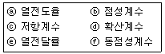
- ⓐ, ⓑ
- ⓒ, ⓔ
- ⓓ, ⓕ
- ⓔ, ⓕ
(정답률: 77%)
27. 프로판가스 1Nm3 을 연소시켰을 때 건연소 가스량은 약 몇 Nm3인가? (단, 공기비는 1.1이다.)
- 22.2
- 24.2
- 26.2
- 28.2
(정답률: 55%)
28. 확산화염의 연소방식에 대한 설명으로 틀린 것은?
- 연소생성물은 화염면의 양측면으로 확산됨에 따라 없어진다.
- 연료와 산화제의 경계면이 생겨 서로 반대측 면에서 경계면으로 연료와 산화제가 확산해 온다.
- 가스라이터의 연소는 전형적인 기체연료의 확산화염이다.
- 연료와 산화제가 적당 비율로 혼합되어 가연혼합기를 통과할 때 확산화염이 나타난다.
(정답률: 35%)
29. 가스 폭발의 용어 중 DID의 정의에 대하여 가장 올바르게 나타낸 것은?
- 격렬한 폭발이 완만한 연소로 넘어갈 때의 시간
- 어느 온도에서 가열하기 시작하여 발화에 이르기까지의 시간
- 폭발 등급을 나타내는 것으로서 가연성 물질의 위험성의 척도
- 최초의 완만한 연소로부터 격렬한 폭굉으로 발전할 때까지의 거리
(정답률: 79%)
30. 가스가 폭발하기 전 발화 또는 착화가 일어날 수 있는 요인으로 가장 거리가 먼 것은?
- 습도
- 조성
- 압력
- 온도
(정답률: 68%)
31. 가연성 가스의 폭발범위에 대한 설명으로 옳지 않은 것은?
- 일반적으로 압력이 높을수록 폭발범위는 넓어진다.
- 가연성 혼합가스의 폭발범위는 고압에 있어서는 상압에 비해 훨씬 넓어진다.
- 프로판과 공기의 혼합가스에 불연성가스를 첨가하는 경우 폭발범위는 넓어진다.
- 수소와 공기의 혼합가스는 고온에 있어서는 폭발범위가 상온에 비해 훨씬 넓어진다.
(정답률: 83%)
32. 가연성가스가 폭발할 위험이 있는 농도에 도달할 우려가 있는 장소를 위험장소라 한다. 밀폐된 용기 또는 설비 내 밀봉된 가연성가스가 그 용기 또는 설비의 사고로 인해 파손되거나 오조작의 경우에만 누출할 위험이 있는 장소는 다음 중 어느 장소에 해당하는가?
- 0종 장소
- 1종 장소
- 2종 장소
- 3종 장소
(정답률: 77%)
33. 어떤 경우에는 실험 데이터가 없어 연소한계를 추산해야 할 필요가 있다. 존스(Johes)는 많은 탄화수소 중기의 연소하한계(LFL)와 연소상한계(UFL)는 연료의 양론농도(Cst)의 함수라는 것을 발견하였다. 다음 중 존스(Johes)연소하한계(LFL) 관계식을 옳게 나타낸 것은?
- LFL＝0.55Cst
- LFL＝1.55Cst
- LFL＝2.50Cst
- LFL＝3.50Cst
(정답률: 68%)
34. 폭굉(detonation)에 대하여 가장 적절하게 설명한 것은?
- 관내에서 연소파가 갑자기 전해지는 현상이다.
- 관내에서 연소파가 일정거리 진행 후 급격히 연소속도가 증가하는 현상이다.
- 연소에 따라 공급된 에너지에 의해 불규칙한 온도범위에서 연소파가 진행되는 현상이다.
- 충격파의 면에 저온이 발생해 혼합기체가 급격히 연소하는 현상이다.
(정답률: 58%)
35. 가스가 노즐로부터 일정한 압력으로 분출하는 힘을 이용하여 연소에 필요한 공기를 흡인하고, 혼합관 중에서 혼합한 후 화염공에서 분출시켜 예혼합연소시키는 버너는?
- 전 1차 공기식
- 블라스트식
- 적화식
- 분젠식
(정답률: 66%)
36. 1Kg의 기체가 압력 50㎪, 체적 2.5m3의 상태에서 압력 1.2MPa, 체적 0.2m3의 상태로 변화하였다. 이 과정 중에 내부에너지가 일정하다고 할 때 엔탈피의 변화량은 약 몇 kJ인가?
- 100
- 1⑤
- 110
- 115
(정답률: 54%)
37. 다음 중 연소의 3요소로만 옳게 나열된 것은?
- 공기비, 산소농도, 점화원
- 가연성 물질, 산소공급원, 점화원
- 연료의 저열발열량, 공기비, 산소농도
- 인화점, 활성화에너지, 산소농도
(정답률: 88%)
38. 공기비가 적을 경우 연소에 미치는 영향에 대한 설명으로 틀린 것은?
- 미연소에 의한 열손상이 증가한다.
- 불완전연소가 되어 매연이 많이 발생한다.
- 미연소 가스로 인한 폭발 사고가 발생되기 쉽다.
- 연소가스 중 NOx가 많아져 대기오염이 심해진다.
(정답률: 77%)
39. 1Kmol의 일산화탄소와 2Kmol의 산소로 충전된 용기가 있다. 연소 전 온도는 298K, 압력은 0.1MPa이고 연소 후 생성물은 냉각되어 1300K로 되었다. 정상상태에서 완전연소가 일어났다고 가정했을 때 열전달량은 몇 kJ인가? (단, 반응물 및 생성물의 총엔탈피는 각각 -11⑤29kJ, -293338kJ이다.)
- -202397
- -230323
- -340238
- -403867
(정답률: 44%)
40. 600℃의 고열원과 300℃의 저열원 사이에 작동하고 있는 카르노 사이클(carnot cycle)의 최대 효율은?
- 34.36%
- 50.00%
- 52.35%
- 74.67%
(정답률: 64%)
3과목: 가스설비
41. 일정 압력 이하로 내려가면 가스 분출이 정지되는 구조의 안전밸브는?
- 가용전식
- 파열식
- 스프링식
- 박판식
(정답률: 77%)
42. 저온취성을 막기 위하여 사용되는 저온 장치용 재료로서 가장 거리가 먼 것은?
- 9% 니켈강
- 18-8 스테인리스강
- 구리 및 구리합금
- 연강 및 니켈강
(정답률: 55%)
43. 펌프에서 발생할 수 있는 캐비테이션 현상의 발생 조건이 아닌 것은?
- 마찰 저항 증가 시
- 흡입양정이 지나치게 길 때
- 과속으로 유량이 증가 될 때
- 관로 내의 온도가 액체의 냉각점보다 낮을 때
(정답률: 67%)
44. 도시가스의 누출 시 감지할 수 있도록 첨가하는 냄새가 나는 물질(부취제)에 대한 설명으로 옳은 것은?
- THT는 TBM에 비해 취기 강도가 크다.
- THT는 TBM에 비해 화학적으로 안정하다.
- THT는 TBM에 비해 토양 투과성이 좋다.
- THT는 경구투여시에는 독성이 강하다.
(정답률: 63%)
45. 염화비닐호스의 안층의 재료는 70℃에서 48시간 공기가열 노화시험을 한 후 인장강도 저하율이 몇 % 이하 이어야 하는가?
- 5%
- 10%
- 20%
- 25%
(정답률: 45%)
46. 도시가스의 유해성분(황전량, 황화수소 및 암모니아)에 대하여 연소가스의 특수성분 분석방법으로 측정하는데 검사주기 및 측정위치로 옳은 것은?
- 매주 1회씩, 가스홀더 입구
- 매주 1회씩, 가스홀더 출구
- 매달 1회씩, 가스홀더 입구
- 매달 1회씩, 가스홀더 출구
(정답률: 64%)
47. 암모니아 취급 및 저장 시 주의사항으로 틀린 것은?
- 암모니아용의 장치나 계기에는 직접 동이나 황동을 사용할 수 없다.
- 암모니아 건조제는 알칼리성이므로 진한 황산 등을 쓸 수 없고 소다석회를 사용한다.
- 액체 암모니아는 할로겐, 강산과 접촉하면 심하게 반응하여 폭발, 비산하는 경우가 있으므로 주의한다.
- 고온, 고압하에서 암모니아 장치의 재료는 알루미늄 합금을 사용한다.
(정답률: 64%)
48. 분자량이 큰 탄화수소를 원료로 10000Kcal/Nm3 정도의 고열량 가스를 제조하는 방법은?
- 부분연소 프로세스
- 사이클링식 접촉분해 프로세스
- 수소화분해 프로세스
- 열분해 프로세스
(정답률: 75%)
49. 증기압축식 냉동 사이클에 해당되지 않는 것은?
- 습증기 압축 사이클
- 건증기 압축 사이클
- 과냉각 사이클
- 카르노 냉동 사이클
(정답률: 50%)
50. 양정이 5m, 송출량이 3m3/min일 때 축동력이 10PS이면 원심펌프의 효율은 약 얼마인가?
- 30%
- 33%
- 36%
- 39%
(정답률: 78%)
51. 나프타의 사이크링식 접촉분해법에 사용되는 촉매로 옳은 것은?
- Fe계 촉매
- Cr계 촉매
- Ni계 촉매
- V계 촉매
(정답률: 67%)
52. 산소 용기에 산소 120㎏이 들어있을 때 20℃에서의 절대압력이 125㎏/cm2 이었다면 용기의 내용적은 몇 L인가? (단, 산소의 가스정수는 26.5로 한다.)
- 745
- 74.5
- 7.45
- 0.745
(정답률: 43%)
53. 액화석유가스용 압력조정기 중 다이어프램의 물성시험에 대한 설명으로 옳은 것은?
- 인장강도는 10MPa 이상인 것으로 한다.
- 인장응력은 1MPa 이상인 것으로 한다.
- 신장영구늘음율은 30% 이하인 것으로 한다.
- 압축영구줄음율은 30% 이하인 것으로 한다.
(정답률: 37%)
54. 액화석유가스(LPG)를 용기 또는 소형저장탱크에 충전 시 기상부는 용기 내용적의 15% 를 확보하도록 하고 있다. 다음 중 그 이유로서 가장 옳은 것은?
- 용기가 부식여유를 갖도록
- 액체상태의 유동성을 갖도록
- 충전된 액체상태의 부피의 양을 줄이도록
- 온도상승에 따른 부피팽창으로 인한 파열을 방지하기 위하여
(정답률: 83%)
55. 내용적이 190L인 초저온 용기에 대하여 단열성능시험을 위해 24시간 방치한 결과 70㎏이 되었다. 이 용기의 단열성능시험 결과를 판정한 것으로 옳은 것은? (단, 외기온도는 25℃, 액화질소의 끓는점은 -196℃, 기화잠열은 48kcal/㎏으로 한다.)
- 계산결과 0.00333(kcal/h·℃·L)이므로 단열성능이 양호하다.
- 계산결과 0.00333(kcal/h·℃·L)이므로 단열성능이 불량하다.
- 계산결과 0.03334(kcal/h·℃·L)이므로 단열성능이 양호하다.
- 계산결과 0.03334(kcal/h·℃·L)이므로 단열성능이 불량하다.
(정답률: 60%)
56. LNG의 기화장치에 대한 설명으로 틀린 것은?
- Open rack vaporizer는 해수를 가열원으로 사용한다.
- Submerged conversion vaporizer는 연소가스가 수조에 설치된 열교환기의 하부에 고속으로 분출되는 구조이다.
- Submerged conversion vaporizer는 물을 순환시키기 위하여 펌프 등의 다른 에너지원을 필요로 한다.
- Intermediate fluid vaporizer는 프로판을 중간매체로 사용할 수 있다.
(정답률: 64%)
57. 가스조정기(Regulator)의 역할에 해당되는 것은?
- 용기내의 가스압력과 관계없이 연소기에서 완전연소에 필요한 최적의 압력으로 감압한다.
- 가스를 정제하고 유량을 조절한다.
- 공급되는 가스의 조성을 일정하게 한다.
- 용기 내 노의 역화를 방지한다.
(정답률: 63%)
58. 저온수증기 개질에 의한 SNG(대체천연가스)제조 프로세스의 순서로 옳은 것은?
- LPG → 수소화 탈황 → 저온수증기 개질 → 메탄화 → 탈탄산 → 탈습 → SNG
- LPG → 수소화 탈황 → 저온수증기 개질 → 탈습 → 탈탄산 → 메탄화 → SNG
- LPG → 저온수증기 개질 → 수소화 탈황 → 탈습 → 탈탄산 → 메탄화 → SNG
- LPG → 저온수증기 개질 → 탈습 → 수소화 탈황 → 탈탄산 → 메탄화 → SNG
(정답률: 72%)
59. 고압가스의 분출시 정전기가 가장 발생하기 쉬운 경우는?
- 다성분의 혼합가스인 경우
- 가스의 분자량이 작은 경우
- 가스가 건조해 있을 경우
- 가스 중에 액체나 고체의 미립자가 섞여있는 경우
(정답률: 69%)
60. 저온(T2)으로부터 고온(T1)으로 열을 보내는 냉동기의 성능계수는?
- T2/(T1-T2)
- (T1-T2)/T2
- T1/(T1-T2)
- (T1-T2)/T1
(정답률: 64%)
4과목: 가스안전관리
61. 고압가스 용기의 내압시험방법 중 팽창측정시험의 경우 용기가 완전히 팽창한 후 적어도 얼마 이상의 시간을 유지하여야 하는가?
- 30초
- 45초
- 1분
- 5분
(정답률: 69%)
62. 차량에 고정된 용기로 염소를 운반할 때 용기의 내용적은 몇 L 이하가 되어야 하는가?
- 10000
- 12000
- 15000
- 18000
(정답률: 70%)
63. 고압가스 설비 내의 압력이 사용압력을 초과할 경우 즉시 이를 상용압력 이하로 되돌릴 수 있는 장치가 아닌 것은?
- 역류방지밸브
- 안전밸브
- 릴리프밸브
- 파열판
(정답률: 72%)
64. 반밀폐형 강제배기식 가스보일러를 공동배기방식으로 설치하고자 할 때의 기준으로 틀린 것은?
- 공동배기구 단면형태는 원형 또는 정사각형에 가깝도록 한다.
- 동일 층에서 공동배기구로 연결되는 연료전지의 수는 2대 이하로 한다.
- 공동배기구에는 방화댐퍼를 설치해야 한다.
- 공동배기구 톱은 풍압대 밖에 있어야 한다.
(정답률: 59%)
65. 액화석유가스 저장탱크와 다른 저장탱크와의 사이에서 두 저장탱크의 최대 지름을 합산한 길이의 1/4의 길이가 1m 이상인 경우에는 두 저장탱크의 사이에 두 저장탱크의 최대지름을 합산한 길이의 1/4 이상에 해당하는 거리를 유지하여야 하나, 탱크에 무엇을 설치하는 경우 그러하지 아니할 수 있는가?
- 물분무장치
- 누출 경보장치
- 자동제어 장치
- 방호벽
(정답률: 67%)
66. 다음 중 반드시 역화방지장치를 설치하여야 하는 곳은?
- 천연가스를 압축하는 압축기와 충전기사이의 배관
- 아세틸렌의 고압건조기와 충전용 교체 밸브사이의 배관
- 가연성가스를 압축하는 압축기와 충전용 교체밸브 사이의 배관
- 암모니아 합성탑과 압축기와의 사이의 배관
(정답률: 74%)
67. HCN의 특징에 대한 설명으로 틀린 것은?
- 물에 잘 녹으며 할로겐과도 반응한다.
- 독성이 강하며 쉽게 액화되고 액체는 휘발하기 쉽다.
- 공기보다 약간 가벼운 기체로 공기 중에서 폭발할 수 있다.
- 복숭아 냄새가 나는 황색의 기체로 산화성이 강하다.
(정답률: 64%)
68. 운반하는 액화염소의 질량이 500㎏인 경우 갖추지 않아도 되는 보호구는?
- 방독마스크
- 공기호흡기
- 보호의
- 보호장화
(정답률: 86%)
69. 내용적이 25000L인 액화산소 저장탱크와 내용적이 3m3인 압축산소 용기가 배관으로 연결된 경우 총 저장능력은 약 몇 m3인가? (단, 액화산소의 비중량은 1.14㎏/L이고, 35℃에서 산소의 최고충전압력은 15MPa이다.)
- 2818
- 2918
- 3018
- 3118
(정답률: 43%)
70. 고압가스 충전용기 등의 적재, 취급, 하역 운반요령에 대한 설명으로 옳은 것은?
- 교통량이 많은 장소에서 엔진을 켜두고, 용기를 하역작업을 한다.
- 경사진 곳에서는 주차 브레이크를 걸어놓고 하역작업을 한다.
- 충전용기를 적재한 차량은 제1종 보호시설과 10m 이상의 거리를 유지한다.
- 차량의 고장 등으로 인하여 정차하는 경우는 적색표지판을 등을 설치하여 다른 차들과 추돌을 방지한다.
(정답률: 75%)
71. 자동차에 고정된 탱크로 수요자의 소형저장탱크에 액화 석유가스를 충전할 때의 기준으로 틀린 것은?
- 소형저장탱크의 검사여부를 확인하고 공급할 것
- 소형저장탱크 내의 잔량을 확인한 후 충전할 것
- 충전작업은 수요자가 채용한 경험이 많은 사람의 입회하에 할 것
- 작업 중의 위해방지를 위한 조치를 할 것
(정답률: 73%)
72. 액체프로판 10㎏이 기화되어 가스 상태로 되었을 때 프로판 가스의 체적은 표준상태에서 몇 Nm3가 되는가?
- 3.⑤
- 5.09
- 6.⑤
- 7.09
(정답률: 67%)
73. 하천 또는 수로를 횡단하여 배관을 매설할 경우 다음 중 2중관으로 하여야 하는 가스는?
- 염소
- 수소
- 아세틸렌
- 산소
(정답률: 81%)
74. 도시가스시설 공사계획의 승인·신고 사항에 해당하는 것은?
- 본관을 10m 설치하는 공사
- 최고사용압력이 0.4MPa인 공급관을 1000m 설치하는 것으로 승인을 얻었으나 계획이 변경되어 1010m를 설치하는 공사
- 호칭지름이 50㎜이고 최고사용압력이 2.5kPa인 공급관에 연결된 사용자 공급관을 100m 설치하는 공사
- 제조소 내 중압 배관으로서 호칭지름 150㎜인 배관을 30m 설치하는 공사
(정답률: 39%)
75. 도시가스 배관의 이음부와 전기설비 사이 이격거리의 기준으로 틀린 것은?
- 전기계량기와 60㎝ 이상
- 전기점멸기와 60㎝ 이상
- 전기접속기와 30㎝ 이상
- 전기개폐기와 60㎝ 이상
(정답률: 60%)
76. 독성가스설비를 수리를 할 때 독성가스의 농도를 얼마이하로 하여야 하는가?
- 18% 이하
- 22% 이하
- TLV-TWA 기준농도 이하
- TLV-TWA 기준농도의 1/4 이하
(정답률: 75%)
77. 도시가스시설의 완성검사 대상에 해당하지 않는 것은?
- 가스사용량의 증가로 특정가스사용시설로 전환되는 가스사용시설 변경공사
- 특정가스사용시설로 호칭지름 50㎜의 강관을 25m 교체하는 변경공사
- 특정가스사용시설의 압력조정기를 증설하는 변경공사
- 배관변경을 수반하지 않고 월사용예정량 550m3를 증설하는 변경공사
(정답률: 62%)
78. 산소를 용기에 30℃에서 120㎏f/cm2·g까지 충전하였다. 온도가 0℃로 되면 압력은 약 몇 ㎏f/cm2이 되는가?
- 98
- 100
- 108
- 120
(정답률: 74%)
79. 가스보일러에서 CO가스의 발생원인으로 가장 거리가 먼 것은?
- 연소기의 열교환기 상태불량에 의한 CO 발생
- 연소가스가 외풍으로 연소기 설치실로 역류유입
- 배기상태 불량으로 CO 증대와 산소공급 불량
- 외기의 공기가 연소실 내로 유입
(정답률: 64%)
80. 수소가스용기가 보통 사용 상태 하에서 파열사고를 일으켰다. 이 사고의 원인으로 틀린 것은?
- 용기가 수소취성을 일으켰다.
- 과충전되었다.
- 용기를 난폭하게 취급하였다.
- 용기에 균열, 녹 등이 발생하였다.
(정답률: 66%)
5과목: 가스계측기기
81. 선팽창계수가 다른 2종의 금속을 결합시켜 온도 변화에 따라 굽히는 정도가 다른 특성을 이용한 온도계는?
- 유리제 온도계
- 바이메탈 온도계
- 압력식 온도계
- 전기저항식 온도계
(정답률: 80%)
82. 다음 [그림]은 어떤 가스미터인가?
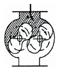
- 건식 가스미터
- 습식 가스미터
- 루트 가스미터
- 오리피스미터
(정답률: 84%)
83. 목표치에 따른 자동제어의 분류 중 계 전체의 지연을 적게 하는데 유효하기 때문에 출력측에 낭비시간이나 시간지연이 큰 프로세스제어에 적합한 제어방법은?
- 정치제어
- 추치제어
- 시퀀스제어
- 캐스케이드제어
(정답률: 64%)
84. 다음 제어동작 중 오프셋(Off-set)이 발생하기 때문에 부하변화가 작은 프로세스에 주로 적용되는 동작은?
- 미분동작
- 비례동작
- 적분동작
- 뱅뱅동작
(정답률: 57%)
85. 다음 중 열전도도가 가장 낮은 가스는?
- 암모니아
- 헬륨
- 질소
- 수소
(정답률: 51%)
86. 다음 가스분석 방법 중 흡수분석법이 아닌 것은?
- 헴펠법
- 적정법
- 오르자트법
- 게겔법
(정답률: 72%)
87. 격막식 압력계의 겉모양 및 구조에 대한 설명으로 틀린 것은?
- 영점 조절 장치를 갖추고 있어야 한다.
- 직결형은 A형, 격리형은 B형을 사용한다.
- 직접 지침에 닿는 멈추개는 원칙적으로 붙여야 한다.
- 중간 플랜지는 나사식 및 I형 플랜지식에 적용한다.
(정답률: 60%)
88. 다이어프램(Diaphragm) 압력계에 대한 설명으로 틀린 것은?
- 극히 미소한 압력을 측정할 수 있다.
- 격막의 재질은 천연고무, 합성고무, 테프론 등을 사용한다.
- 부식성 유체압력 측정이 가능하다.
- 응답이 빠르고 온도의 영향을 받지 않는다.
(정답률: 74%)
89. 어떤 비례제어기가 80℃에서 100℃사이에 온도를 조절하는데 사용되고 있다. 이 제어기에서 측정된 온도가 81℃에서 89℃로 될 때 비례대(proportional band)는 얼마인가?
- 10%
- 20%
- 30%
- 40%
(정답률: 62%)
90. 유체의 압력 및 온도 변화에 영향이 적고, 소유량이며 정확한 유량제어가 가능하여 혼합가스 제조 등에 유용한 유량계는?
- Mass Flow Controller
- Roots Meter
- 벤투리유량계
- 터빈식유량계
(정답률: 70%)
91. 막식 가스미터의 고장 중 가스미터가 노후, 충격, 부품의 마모 및 외부영향 등으로 계량 정밀도가 저하되는 경우는 무엇인가?
- 부동
- 불통
- 감도불량
- 기차불량
(정답률: 57%)
92. 게겔법에서 C3H6를 분석하기 위한 흡수액으로 사용되는 것은?
- 33% KOH 용액
- 알칼리성 피로갈롤 용액
- 암모니아성 염화 제1구리 용액
- 87% H2SO4
(정답률: 70%)
93. 다음 그림은 가스크로마토그래프의 크로마토그램이다. t, t1, t2는 무엇을 나타내는가?
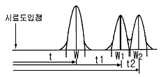
- 이론 단수
- 체류시간
- 분리관의 효율
- 피크의 좌우 변곡점 길이
(정답률: 84%)
94. 부르돈관 압력계로 측정한 압력이 5㎏/cm2이었다. 이때 부유피스톤 압력계 추의 무게가 10㎏ 이고, 펌프 실린더의 직경이 8㎝, 피스톤 지름이 4㎝ 라면 피스톤의 무게는 약 몇 ㎏인가?
- 52.8
- 72.8
- 241.2
- 743.6
(정답률: 34%)
95. 완만연소분석법에 의한 시료가스 분석 시 사용하는 완만연소피펫에 대한 설명으로 옳은 것은?
- 약 10%의 팔라듐석면을 0.1~0.2g 넣은 팔라듐관을 80℃ 전후로 가열하는 적열부를 가지고 있다.
- 1차로 산화등을 250℃로 가열하여 분석하고, 2차로 800~900℃로 적열하여 분석하는 적열부를 가지고 있다.
- 지름 0.5㎜ 정도의 백금선을 3~4㎜의 코일로 한 적열부를 가지고 있다.
- 일정량의 가연성가스를 뷰렛에 넣고 적당량의 산소를 공급하여 전기스파크로 폭발시키는 피펫을 가지고 있다.
(정답률: 43%)
96. 가스검지 시험지와 검지가스와의 연결이 바르게 된 것은?
- KI-전분지 → CO
- 리트머스지 → C2H2
- 염화제일동 착염지 → 알칼리성 가스
- 하리슨시약 → COCl2
(정답률: 77%)
97. 가스미터의 구비조건으로 거리가 먼 것은?
- 소형으로 용량이 작을 것
- 기차의 조정이 용이할 것
- 강도가 예민할 것
- 구조가 간단할 것
(정답률: 75%)
98. 차압식 오리피스 유량계에서 오리피스 전후의 압력차이가 처음보다 4배만큼 커졌을 때 유량은 어떻게 변하는가? (단, 다른 조건은 모두 같으며 Q1, Q2는 각각 처음과 나중의 유량을 나타낸다.)
- Q2＝Q
- Q2＝2Q1
- Q2＝√2 Q
- Q2＝4Q1
(정답률: 58%)
99. 가스미터는 측정방식에 따라 실축식과 추량식으로 구분된다. 다음 중 추량식이 아닌 것은?
- 회전자식(roots형)
- Delta 형
- Turbine 형
- 벤투리형
(정답률: 53%)
100. 온도계 눈금값의 기준이 되는 정의 정점에 대하여 가장 바르게 나타낸 것은?
- 온도계에 나타난 지시값에서 오차를 뺀 값
- 몇 가지 표준물질의 비등, 용해, 응고점
- 온도계에 있는 눈금 중에서 유효치를 가지는 범위
- 온도계에 나타나는 지시가 정확히 눈금줄과 같은 점
(정답률: 40%)